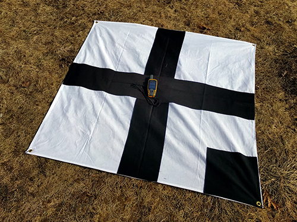

Map
Georeferencing images
- Mission Planner can geo-reference images
- When geo-referencing images in Mission Planner, it will also try and include system files
- If you copied images off the memory card using OSX you may end up with hidden files such as
._DSC0098.JPGthat will mess up the message count compared to file count
- If you copied images off the memory card using OSX you may end up with hidden files such as
Ground control points

Image processing
OpenDroneMap (ODM) is an open source toolkit for processing aerial drone imagery.
WebODM is a free, user-friendly, extendable application and API for drone image processing (it uses ODM for the processing).
Portable OpenStreetMap (POSM) integrates best-of-breed tools from a variety of sources and developers on a single device that can be deployed to the field to facilitate mapping efforts, particularly when internet access is absent. It includes a version of ODM as well as an imagery API.
Viewing
QGIS is a free and open source geographic information system that can be used for viewing and editing raster data such as the orthorectified imagery outputs from ODM.
Sharing
OpenAerialMap (OAM) is an open service to provide access to a commons of openly licensed imagery and map layer services. Anyone can download or contribute imagery to this growing commons of openly licensed imagery.
- OAM will handle data in any CRS
- The way to bundle the
*.tfwand*.prjfiles is to usegdal_translateto write it out as a single file where that same data is included in the geotiff metadata (which may already be the case; try moving those sidecar files and rungdalinfoon the geotiff)
- The way to bundle the
Mapping
OpenStreetMap (OSM) is built by a community of mappers that contribute and maintain data about roads, trails, buildings, transportation infrastructure, and much more, all over the world. Imagery hosted on OAM can be loaded as a base layer and used to trace features into OSM.